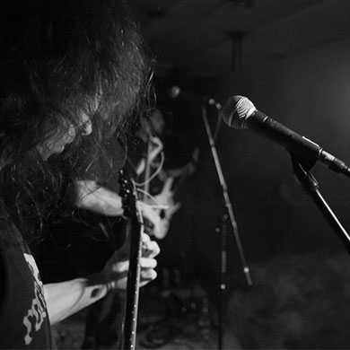
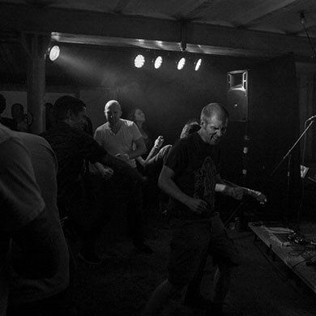
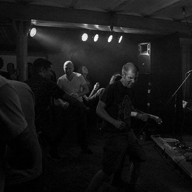

Vorwärts
Wie auf dem Land der Punk ankam, weiss Vorwärts noch ganz genau: Sie gründeten sich 1979 in 4444 Rümlingen mit anderen Töfflibuben die Band Vorwärts. Knapp 40 Jahre später geht er wieder auf Tour. Und erinnert sich daran, wie das war, als man die Dorfälteren noch mit einer Nietenjacke provozieren konnte.
 
